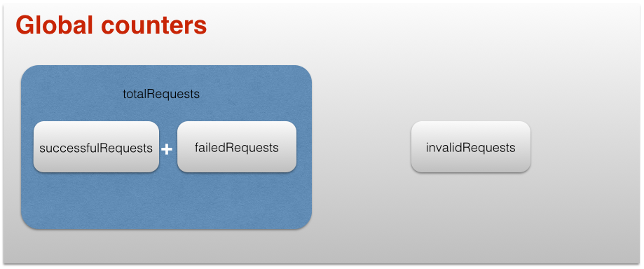
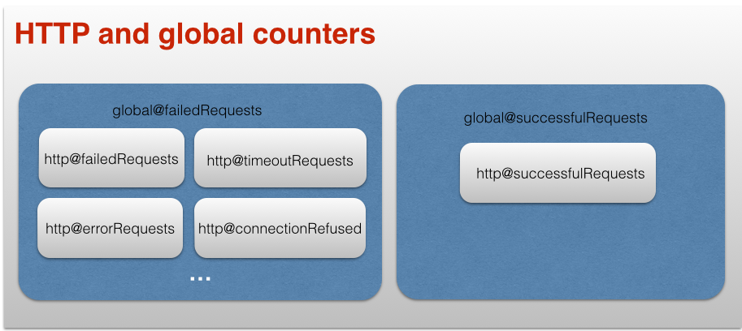

Counters
Megaload retrieves all counters and histograms, displaying them in the real-time web dashboard.
Counters are also used in test and phase assertions to validate the success of the test. A counter can be used in an assertion as the counter value or as a percentage over the total of requests global_totalRequests.
Predefined counters
Global counters
Global counters keep track of totals or actuals, including all servers and protocols.
global_counter_users
The total running virtual users.
A virtual user is an instance of a plugin, which can have one or several connections to a server. This counter reports the current total; at the end of the test it resets to 0.
Note that each scenario can run several virtual users in parallel, either by starting several plugins or plugins with several connections. Thus, global_counter_users may be larger than global_counter_scenarios.
global_counter_scenarios
Number of concurrent scenarios.
global_counter_totalRequests
Number of requests sent since the start of the test.
global_counter_successfulRequests Number of successful requests sent since the start of the test.
global_counter_failedRequests
Number of failed requests sent since the start of the test.
global_counter_invalidRequests
Number of invalid requests generated since the start of the test. A request is invalid if it fails before being sent, that is, it is not well-formed. Invalid requests do not increase the counters of total or failed requests.
global_counter_initSections
Number of init sections executed since the start of the test.
global_counter_teardownSections
Number of teardown sections executed since the start of the test.
global_counter_scenario_<id>
Number of running scenarios of type <id>.
global_counter_totalScenarios_<id>
Number of scenarios of type <id> executed started since the start of the test.
global_counter_abortedScenarios
Number of scenarios which have been aborted since the start of the test.
global_counter_abortedScenarios_<id>
Number of scenarios of type <id> which have been aborted since the start of the test.

HTTP counters
The following counters are specific to the HTTP protocol.
http_counter_responseSize
Total bytes of data received by the HTTP protocol from all servers since the start of the test.
http_counter_responseCode_<code>_<host>
Number of HTTP responses with code <code> from host <host> since the start of the test.
http_counter_connectionRefused_<host>
Number of connections refused by host <host> since the start of the test. These requests are counted in global_failedRequests.
http_counter_connectionTimeout_<host>
Number of connections timeout by host <host> since the start of the test. These requests are counted in global_failedRequests.
http_counter_connectionError_<host>
Number of connections failed with a reason different from timeout or refused by host <host> since the start of the test. These requests are counted in global_failedRequests.
http_counter_timeoutRequests_<host>
Number of requests timed out by host <host> since the start of the test. This counter is the addition of http_timeoutRequests_<host>_<uri> counters, if present. These requests are counted in global_failedRequests.
http_counter_timeoutRequests_<host>_<uri>
(Optional) Number of requests to URI <uri> timed out by host <host> since the start of the test. These requests are counted in http_timeoutRequests_<host>.
Note: uri is the request path if the plugin is configured with the option stats_per_url.
http_counter_timeoutRequests_<host>_<group>
(Optional) Number of requests tagged with the group <group> and timed out by host <host> since the start of the test. These requests are counted in http_timeoutRequests_<host>.
Note: <group> is the parameter group of the request.
http_counter_successfulRequests_<host>
Number of successful requests to host <host> since the start of the test. This counter is the addition of http_successfulRequests_<host>_<uri> counters, if present. These requests are counted in global_successfulRequests.
Note: A request is successful if it returns a syntactically valid HTTP response and its body and status assertions validate to true, in case such assertions exist. Any syntactically valid HTTP response without assertions is considered successful.
http_counter_successfulRequests_<host>_<uri>
(Optional) Number of successful requests to URI uri and host <host> since the start of the test. These requests are counted in http_successfulRequests_<host>.
Note: A request is successful if it returns a syntactically valid HTTP response and its body and status assertions validate to true or are undefined.
Note: uri is the request path if the plugin is configured with the option stats_per_url.
http_counter_successfulRequests_<host>_<group>
(Optional) Number of successful requests tagged with the group group to <host> since the start of the test. These requests are counted in http_successfulRequests_<host>.
Note: A request is successful if it returns a syntactically valid HTTP response and its body and status assertions validate to true or are undefined.
Note: <group> is the parameter group of the request.
http_counter_failedRequests_<host>
Number of failed requests to host <host> since the start of the test. This counter is the addition of http_failedRequests_<host>_<uri> counters, if present. These requests are counted in global_failedRequests.
Note: A request is failed if it returns a syntactically valid HTTP response and its body or status assertions validate to false, in case such assertions exist.
http_counter_failedRequests_<host>_<uri>
(Optional) Number of failed requests to URI uri and host <host> since the start of the test. These requests are counted as http_failedRequests_<host>.
Note: A request is failed if it returns a syntactically valid HTTP response and its body or status assertions validate to false.
Note: uri is the request path if the plugin is configured with the option statss_per_url.
http_counter_failedRequests_<host>_<group>
(Optional) Number of failed requests tagged with the group <group> to host <host> since the start of the test. These requests are counted as http_failedRequests_<host>.
Note: A request is failed if it returns a syntactically valid HTTP response and its body or status assertions validate to false.
Note: <group> is the parameter group of the request.
http_counter_errorRequests_<host>
Number of error requests to host <host> since the start of the test. These requests are counted in global_failedRequests.
Note: A request is counted as an error if the HTTP response is syntactically invalid or the server connection returns an error different from connection refused or connection timeout.
http_counter_errorRequests_<host>_<uri>
(Optional) Number of error requests to URI uri and host <host> since the start of the test. These requests are counted in http_errorRequests_<host>.
Note: A request is counted as an error if the HTTP response is syntactically invalid or the server connection returns an error different from connection refused or connection timeout.
Note: uri is the request path if the plugin is configured with the option stats_per_url.
http_counter_errorRequests_<host>_<group>
(Optional) Number of error requests tagged with the group <group> from host <host> since the start of the test. These requests are counted in http_errorRequests_host.
Note: A request is counted as an error if the HTTP response is syntactically invalid or the server connection returns an error different from connection refused or connection timeout.
Note: <group> is the parameter group of the request.

Custom counters
Counters defined by the users in the test specification can be used in assertions. It is currently not possible to define user histograms.
See actions counter-new, counter-inc, counter-value.
custom_counter_<counter>
Custom counter defined in the test specification
Predefined gauges
The gauges defined in Megaload provide information about the system itself. They report useful information as the targets for each node or current workload. Sometimes, the test targets may not be meet due to the response of the SUT, but in other cases it will be required to scale up Megaload. Gauges provide an insight on Megaload itself.
Global gauges
global_gauge_maxRate
Live local target rate.
Set based on the target specified in the phase -- if the test is specified as JSON -- or based on the local load regulation mechanism -- if the test is specified as Escript.
See global_histogram_requestsPerSecond for the local actual rate.
global_gauge_maxWorkers
Live local target (max) number of workers (scenarios).
Set based on the target specified in the phase -- if the test is specified as JSON -- or based on the local load regulation mechanism -- if the test is specified as Escript.
See global_counter_scenarios for the local actual number of workers.
global_gauge_phaseRate
Target rate from the current phase.
global_gauge_phaseWorkers
Target number of workers (scenarios) from the current phase.
global_gauge_phaseRatePerc
Percentage of the rate specified in the phase that must be fulfilled by the node.
global_gauge_phaseWorkersPerc
Percentage of the concurrent scenarios specified in the phase that must be fulfilled by the node.
System monitoring
Predefined histograms
Histograms provide statistical information about a value: min, max, mean, median, percentile 50, percentile 75, percentile 90, percentile 95, percentile 99, percentile 999.
The histograms described in the following subsections report instant values, that is, the histogram for the last 60 seconds. These histograms allow you to monitor very precisely the evolution of the test in execution through the web interface, with the visualization of individual parameters as min, max or means.
Histograms are used in phase assertions and test assertions to validate the success of the test.
In order to allow these verifications, there are some special histograms for response times and rate of requests, which provide the response time for the whole of the test or phase.
Test and phase histograms are displayed in Megaload-UI, preceded by the tags test_ or phase_.
Global histograms
global_histogram_requestsPerSecond
Rate of requests per second. Reports the statistics for the last 60 seconds of testing. Includes all servers and protocols.
Test and phase histograms are available as test_global_histogram_requestsPerSecond and phase_global_histogram_requestsPerSecond.
global_histogram_unsatisfiedRps
P0ercentage of the target rate that is not fulfilled by the node.
HTTP histograms
http_histogram_responseSize_<host>
Bytes of data received per response from host since the start of the test. Reports the statistics for the last 60 seconds of testing.
Test and phase histograms are available as test_http_histogram_responseSize_<host> and phase_http_histogram_responseSize_<host>
http_counter_responseTime
Response time in microseconds per request since the start of the test.
Test and phase histograms are available as test_http_histogram_responseTime and phase_http_histogram_responseTime.
This histogram is the aggregation of http_responseTime_<host>.
http_counter_responseTime_<host>
Response time in microseconds per request to <host> since the start of the test.
Test and phase histogram are available as test_http_histogram_responseTime_<host> and phase_http_histogram_responseTime_<host>.
http_counter_responseTime_<host>
(Optional) Response time in microseconds per request to URI <uri> and <host> since the start of the test.
Note: uri is the request path if the plugin is configured with the option texttt{stats_per_url}.
http_counter_responseTime_<host>_<group>
Response time in microseconds per request tagged with group <group> to <host> since the start of the test.
Note: uri is the request path if the plugin is configured with the option texttt{stats_per_url}.
http_histogram_connectionTime_<host>
Connection time in microseconds to
Test and phase histogram are available as test_http_histogram_connectionTime_<host> and phase_http_histogram_connectionTime_<host>
http_histogram_connectionTime
Connection time in microseconds to each server since the start of the test. Reports the statistics for the last 60 seconds of testing.
Test and phase histogram are available as test_http_histogram_connectionTime and phase_http_histogram_connectionTime
This histogram is the aggregation of http_connectionTime_<host>.